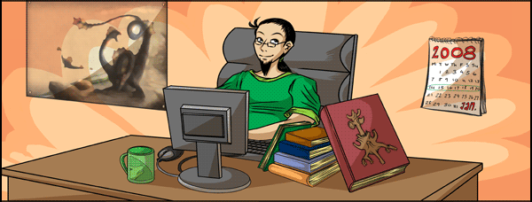

")
Summoning: Part 4 - Release

Summoning: Part 4 - Release
In this, the fourth and final Summoning Development Diary, we look at how anticipation has been built up for Summoning, including everything from birds' eggs to bulldogs.
Episode IV: A New Hype
Back in 2006, May's Behind the Scenes showcased a game engine update, two new random events, Swan Song and Royal Trouble. Tucked in at the very end was one sentence: "We are also adding some other smaller features to the game later this month, such as clockwork toys for your cats, teleportation tablets, making your own cups of tea and even chairs you can sit down in."
"By not mentioning upcoming updates, less players talk about them. Releasing information provokes conversations on the Forum, and gets people talking and speculating."
 Mod Mark
Mod Mark
RuneScape Content
That sentence was the only hint that Construction was arriving three weeks later. This is the way that we generally release skills – with little or no promotion and 'hype'. Doing it in this fashion comes with many benefits; the unexpected release is enjoyable to many members, and reading the Forums, once we have surprised you all, is certainly fun!
While there is a lot to gain by doing it this way, a lot is also lost. The initial rush and excitement of finding out a skill has been released soon disappears. "Also, by not mentioning upcoming updates, less players talk about these positive things. Releasing information provokes conversations on the Future Updates Forum, and gets people talking and speculating," says Mod Mark, Senior Game Developer.
Players can eagerly talk about what Summoning will entail, what creatures they want to Summon and even what a wolpertinger is. "Some people also like to plan their training. For something as game-affecting as Summoning, which crosses over with every skill and even changes our Combat level calculation, players appreciate the notice," says Mod Mark.
Every Dog Has His Day
Changes were made to how we hinted at Summoning, mainly because of a bulldog. Web Content's Mod Kinder and Graphics's Mod Jamie created a front page advert that showed a character typing something into the website search engine. We knew that curious players would do the same, so we had some fun – we made that word 'bulldog'. A page was then introduced with an animated image of the bulldog pet from Summoning, which we later showed in the first Summoning Development Diary.

Just a selection of the puppy breeds and variations that will come with Summoning, and just after Summoning...
It was so popular on the Forums that we decided to change our approach, promoting Summoning more strongly. Not everyone was so keen on that idea at first, most notably RuneScape Content's Mod Wilson, developer of Summoning: "I had that pang of regret that we weren't just going to throw it out there unannounced. I really wanted to surprise everyone with the skill and knock their socks off." He was eventually won over, though: "not least because of the bulldog. I have fond memories of a bulldog my uncle owned. She'd just lie at my feet, snoring and farting all day."
We drew up a schedule of hints and spoilers, which was initially dominated by in-game teasers. More birds' eggs were planned (penguin, raven and vulture), in addition to a character that walked a bulldog and a pet shop in Yanille. "Once it was released, someone posted that they had got into the pet shop, before being kicked out by a grumpy pet shop owner! I can promise you that one isn't true..." says Mod Wilson.

A sneaky look inside the Yanille pet shop.
The schedule then passed on to Web Content, who planned something Summoning-related for the website every week until the skill's imminent release.
The Greatest Trick the Chaos Elemental Ever Pulled…
When hinting towards the familiars in Summoning, we couldn't have put together a schedule without including the Chaos Elemental. For Summoning, we didn't want to limit him to just a few anagrams in the Postbag from the Hedge, as we have done many times previously. "So, we came up with the noticeboard idea. It was just perfect for including a huge number of Summoning hints," says Mod Osborne, who worked with Mod Murphy, both of Web Content, to create it, "and the idea was inspired by the film 'Usual Suspects'."

The two anagrams left unsolved. Words in them include 'angry', 'net', 'use' and 'granite'.
The noticeboard allowed the Chaos Elemental to try out more visual and, in some cases, more difficult puzzles. In fact, we believed that some were so elaborate that it would take ages for them to be figured out. "We soon changed that opinion!" says Mod Murphy. "The Chaosudoku was completed within hours, hidden words were found in minutes, and only the longest anagrams are yet to be solved."
Summoning 2: The New Batch
"Each creature has unique Summoning requirements, special moves, abilities, distinct personalities and hidden chat options, so no one could possibly experience them all as they rise through the levels."
Mod Osborne
Web Content
Of course, we wouldn't be hyping Summoning if we didn't feel that it was awesome. "It's my favourite members' skill that I've helped to release," says Mod Mark. This opinion seems to be shared by everyone who worked on it: "In terms of quality and quantity, nothing really matches it," says Mod Osborne.
As you have read, one of the things we are most happy about is the size of Summoning. You already know that there is something to do for virtually every skill level, but we can let you in on another secret... After Summoning is released, a second batch of creatures is coming, which will nearly double the size of the original skill! That's right, AFTER Summoning has been released, you will be getting 25 new familiars to summon, and 47 variations of pets and familiars from the first Summoning release!
Some players may wonder why there are two large batches, and not just one massive release. Well, there are issues with so many players downloading a huge piece of content simultaneously. We don't want technical problems and slowdown to interrupt players' enjoyment of the content.
More importantly, so many creatures released at once would be overwhelming to players. "Each creature has unique Summoning requirements, special moves, abilities, distinct personalities and hidden chat options, so no one could possibly experience them all as they rise through the levels," says Mod Osborne. To really get you exploring (and even getting to know) your familiars, we have left a little something extra to come - a dessert to go with January's main course, if you will!

Summoning pouch inventory images for some familiars we've mentioned so far.
Hinting at Summoning has been an interesting experiment for us, and it is one that we feel has been very successful. Our favourite bits have been when studying the Forums, looking at what people expect from Summoning. "It's quite interesting, seeing some of the things that are bandied about on the Forums, considered to be 'fact'," says Mod Mark. Among these are 'I'll be able to summon an army' and 'Summoning has no use for skillers' – well, we can say now that neither of those are true. The hints and teasers have also seen a lot of positive chat, suggestions and anticipation surrounding Summoning, which can only be a good thing!
We can promise you that we have made Summoning to the best of our abilities, and we're very proud of it. All that is left now is for you to play it, enjoy it, get your hands on a Summoning skillcape, and know that another big batch of creatures will be on its way.
(You can download some Summoning concept artwork as wallpapers in the Downloads and Wallpapers section of the website.)

More articles in
Development Diaries
|
|